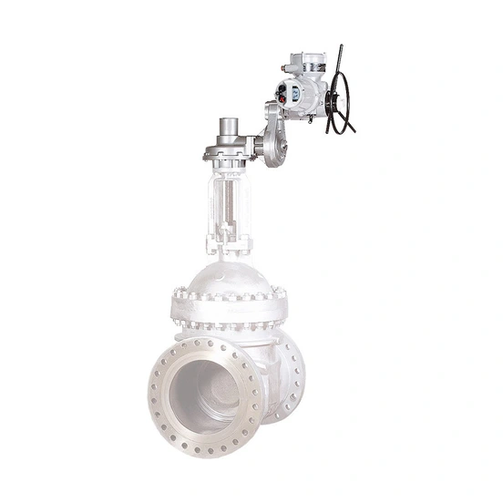

IB là dòng gearbox multi-turn vỏ gang của Rotork, dùng cho van gate, globe, sluice và penstock trong ứng dụng motorised. Gearbox có 14 size (IB2 đến IB14) với nhiều tùy chọn ratio, torque công bố từ 306 Nm đến 8.135 Nm. Bài viết trình bày bảng torque/thrust theo size và dữ liệu cần thu thập để sizing đúng, không khẳng định một cặp actuator-gearbox cố định khi chưa tính toán cụ thể.

Trả lời nhanh
- IB gồm 14 size (IB2-IB14), torque định mức từ 306 Nm đến 8.135 Nm tùy size và ratio.
- Static safety factor 2 (torque) đã tính trong bảng torque công bố.
- Thrust tối đa từ 53 kN (IB2/IB4) đến 1.320 kN (IB14) tùy size.
- Vỏ gang IP67 tiêu chuẩn (ngâm nước 1 m/30 phút), tùy chọn IP68 (ngâm liên tục tới 15 m).
- Mặt bích input/output theo ISO 5210, có tương đương MSS và DIN theo yêu cầu.
Gearbox IB là gì
IB là gearbox multi-turn vỏ gang, thiết kế có ống lồng đầu ra (output sleeve) tháo được để dễ gia công spindle, gearing kín và bôi mỡ trọn đời (grease filled for life), bánh răng input lắp trên vòng bi cầu. Có tùy chọn spur/bevel input reducer, dual shaft bevel (2-3 trục input ở góc 90°/180°), firesafe theo ISO 10497 và hệ thống interlock an toàn.
Bảng torque/thrust theo size IB
| Gearbox | Ratio | Torque output (Nm) | Thrust tối đa (kN) |
|---|---|---|---|
| IB2 | 1 | 306 | 53 |
| IB3 | 1 | 306 | 177 |
| IB4 | 2 / 3-4 / 6 | 306 / 678 / 542 | 53 |
| IB5 | 2 / 3-4 / 6 | 306 / 678 / 542 | 177 |
| IB6 | 3-4 / 6 | 1.355 / 1.084 | 177 |
| IB7 | 3-4 / 6 | 1.355 / 1.084 | 266 |
| IB8 | 3-4 / 6 | 2.033 / 1.627 | 266 |
| IB9 | 3-4 / 6 | 2.033 / 1.627 | 355 |
| IB10 | 4 / 6 | 4.067 | 355 |
| IB11 | 4 / 6 | 4.067 | 500 |
| IB12 | 6 / 8 | 8.135 | 500 |
| IB13 | 6 / 8 | 8.135 | 834 |
| IB14 | 6 / 8 | 8.135 | 1.320 |
Static safety factor 2 (torque) đã được tính trong bảng trên. Mechanical advantage (MA) thực tế đạt được sau vài chu kỳ vận hành đầu — không dùng MA lý thuyết để sizing ban đầu.
Dữ liệu cần chuẩn bị để sizing gearbox IB
- Torque và thrust yêu cầu: lấy từ nhà sản xuất van, đối chiếu với bảng torque/thrust theo size ở trên.
- Ratio và tốc độ input: xác nhận ratio phù hợp với tốc độ actuator dự kiến ghép để đạt tốc độ đóng/mở van mong muốn.
- Số vòng quay (turns): xác nhận số vòng quay cần thiết để đóng/mở hoàn toàn van, ảnh hưởng thời gian vận hành thực tế.
- Mounting: xác nhận input/output flange (F10/F14/F16/F25 hoặc tương đương) phù hợp actuator và van.
- Duty và môi trường: xác nhận yêu cầu IP68/ngâm nước, dải nhiệt độ hoặc tùy chọn firesafe/interlock nếu ứng dụng cần.
Model và range liên quan
| Model/range | Lý do liên quan | Trang sản phẩm |
|---|---|---|
| IB | Gearbox multi-turn chính trong bài | Gearbox multi-turn IB |
| Multi-turn gearboxes (nhóm) | Danh mục gearbox multi-turn tổng quát | Multi-turn gearboxes Rotork |
| IQ3 Pro | Actuator điện multi-turn thường ghép với gearbox IB khi cần motorisation | IQ3 Pro Rotork: cấu tạo, chức năng và cách chọn cấu hình |
| CK Range | Lựa chọn actuator multi-turn khác nếu cần cấu hình nhanh từ tồn kho | CK Range và IQ3 Pro Rotork |
Mua gearbox IB chính hãng tại Việt Nam
Fast Group Engineering là đơn vị cung cấp sản phẩm Rotork chính hãng tại Việt Nam, đầy đủ giấy tờ CO/CQ, catalogue và datasheet theo từng lô hàng. Đội ngũ kỹ thuật hỗ trợ sizing gearbox IB theo torque/thrust, ratio và yêu cầu actuator trước khi báo giá.
Câu hỏi thường gặp
Gearbox IB dùng cho loại van nào?
IB là gearbox multi-turn vỏ gang, dùng cho van gate, globe, sluice và penstock, thiết kế cho ứng dụng motorised (lắp cùng actuator điện).
Dải torque của gearbox IB là bao nhiêu?
Theo datasheet hiện hành, IB2/IB3 có torque định mức 306 Nm; các size lớn hơn từ IB4 đến IB14 có torque từ 306 Nm đến 8.135 Nm tùy ratio, với hệ số an toàn tĩnh (static safety factor) là 2 đã tính trong torque công bố.
Cần dữ liệu gì để sizing đúng gearbox IB?
Cần torque và thrust yêu cầu của van (nếu van có tải dọc trục), ratio phù hợp với tốc độ input của actuator, số vòng quay (turns) để đóng/mở hoàn toàn van, kiểu mounting (input/output flange theo ISO 5210 hoặc tương đương MSS/DIN) và điều kiện môi trường.
IB có chịu ngâm nước không?
Có. Cấp bảo vệ tiêu chuẩn IP67 (ngâm nước 1 m/30 phút), có tùy chọn IP68 cho duty ngâm liên tục tới độ sâu 15 m, theo datasheet hiện hành.
Cần gửi thông tin gì để báo giá gearbox IB?
Gửi torque và thrust yêu cầu của van, số vòng quay để đóng/mở hoàn toàn, loại actuator dự kiến ghép, kiểu mounting và điều kiện môi trường cho Fast Group Engineering để đối chiếu trước khi báo giá.
Gửi dữ liệu van để sizing gearbox IB
Để kiểm tra đúng size, vui lòng gửi torque/thrust yêu cầu, số vòng quay, actuator dự kiến ghép và mounting cho Fast Group Engineering qua Zalo/điện thoại (+84) 938 888 958 hoặc email minhduc@fastgroup.vn.
Nguồn tham khảo
- PUB130-001-00 (tên file thư viện: PUB030-001), IB Multi-turn Cast Iron Housing Gearboxes Datasheet, Issue 10/25 — trang 1 (đặc tính, ứng dụng, IP67/68), trang 3 (bảng ratio/kích thước theo size), trang 4 (bảng torque/thrust/mechanical advantage).
Ghi chú nội bộ: mã publication in trên tài liệu là PUB130-001-00 (Issue 10/25), khác với tên file trong thư viện PDF_REFERENCE (PUB030-001) — reviewer nên xác nhận lại mã publication chính xác với Rotork trước khi trích dẫn công khai, có thể là lỗi đặt tên file hoặc đã có bản cập nhật mã. Bài chưa đối chiếu số vòng quay (turns) cụ thể theo từng size vì datasheet 4 trang này không có cột số vòng quay — cần thêm tài liệu vận hành nếu khách cần thông số này.